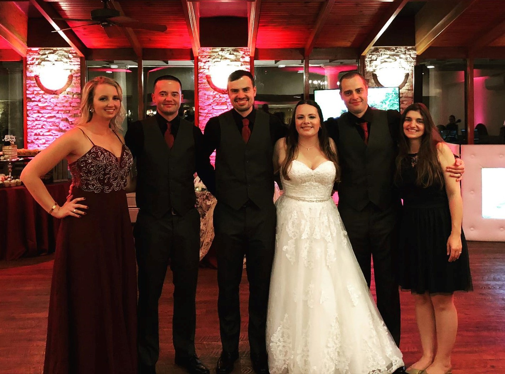

My Bio

Welcome to my Bio Page. My name is Brian Conceicao and I am currently a student at the New England Insstitute of Technology. NEIT is actually my 3rd college, as I have also attended CCRI as well as graduating from MTTI. Having spent several years in the fitness industry, it was time for a change. I was first introduced to the world of coding and computer science by my wife who has been working in the industry the last couple years. Aside from being a full-time student, I also work 6 days a week at Honeywell in the N95 department.
I was born and raised in RI, however both of my parents are actually immigrants. My father was born in Portugal, and lived there until he was in his early 20s. My mother was born in Angola, bu it was a Portuguese territory at the time. She came to the USA at the age of 8. My entire heritage and family history derives directly from Portugal, as me and my older brothers were the first people in our family born in the USA.
Schooling
- Cranston High School East
- Community College of Rhode Island
- MotoRing Techinical Training Institute
HOBBIES
- Sports, virutally all aspects
- Exercise and fitness
- Videogames